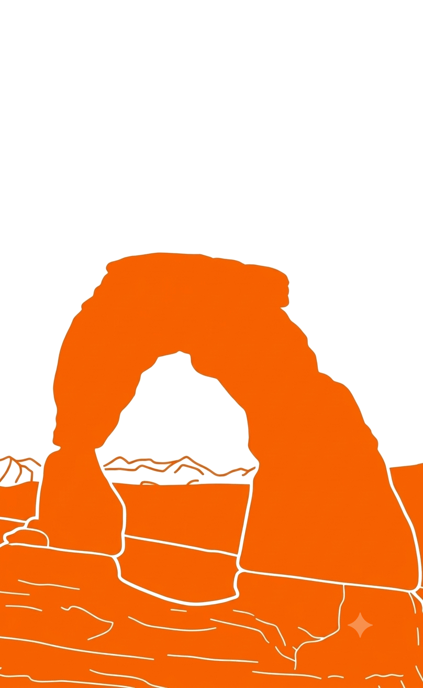
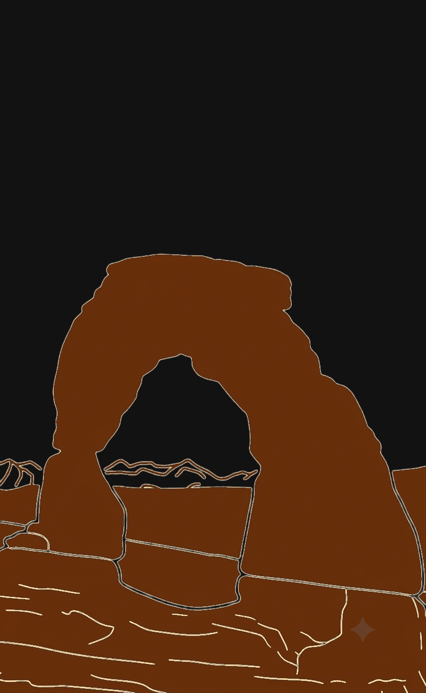

Each app is its own set of lessons with its own focus. One app alone won’t teach you a whole language.
Pick one app. Pick one lesson in it. Listen to that lesson every day for about a week. Most are only around 7 minutes.
Even better, make a sandwich: your lesson, any other random lesson, then your lesson again.
Say your guess out loud, even the very first time. You may get part of it, or none. Guessing still works your memory and recall.
Say it every time, however well or badly it comes out. Making the sounds is what helps you memorize.
Don’t jump around.
Speech recognition can make mistakes. Don’t rely on it alone.
| Document Title | Instructor SOP — Workplace Language Course |
| Purpose | Provide a consistent weekly format for instructors leading workplace language course sessions. |
| Course Length | 20 lessons • approximately 20 weeks |
The Workplace Language Course is not intended to be a complete ESL course. It is designed for quick learning of some of the most important language a factory worker needs to know on the job.
The website contains several language-learning web apps, each with its own focus. The Workplace Language Course is primarily designed for Spanish-speaking ESL students. For the class, the instructor should focus on this workplace-specific course. Many of the other apps support multiple languages, so students whose first language is not Spanish may use them independently on their own device with earbuds, if their language is available.
Each week, students listen to the language, have time to recall and say it themselves, ask questions, and then hear it again.
Keep this pattern consistent from week to week.
The lessons deliberately give students time to respond.
Do not rescue them during the pauses. Encourage students to say the answer out loud, even when they aren't sure.
The pauses are not empty time. They are part of the teaching method. They give the brain time to train new connections between what students hear and what they are learning to recall and say.
Saying the wrong thing is not a failure. The attempt gets the student thinking about the language, and hearing the correct answer immediately afterward helps connect their attempt with the correct idea and build stronger memories.
As students become familiar with a lesson, the first pause — the moment when they anticipate and say the target language themselves — becomes especially important. That act of recalling and producing the language helps train those connections through repeated use.
Instructor Role: The recordings provide the instruction. Your job is to give students structure, protect the practice, and help them when they have questions.
Students are encouraged to practice their current lesson once or twice each day during the week. A lesson takes approximately ten minutes, making regular practice easy to fit into the workday.
The site also contains additional language-learning content that is continually being developed and updated. Students are welcome to explore those materials if they wish, but their primary focus should remain on practicing the current workplace lesson.
The workplace course contains 20 lessons, with one lesson introduced each week. The normal sequence therefore takes approximately 20 weeks (about five months).
Students have access to the other materials on the site as well, but the workplace course should be the primary focus of the weekly group sessions.
To find out whether these lessons are really helping people, this page counts how the web apps are used. The counting is done by a small, privacy-friendly service called GoatCounter. It is anonymous: it does not know your name, it does not ask for an account, and it does not use cookies.
It helps answer simple questions. Do people open a lesson and leave right away? Do they finish it? Which languages and lessons are most useful? The answers are used to fix problems and to make better lessons. The numbers are never sold and are not used for advertising.
The lessons work exactly the same either way. A content blocker or the privacy settings of your browser will stop the counting.